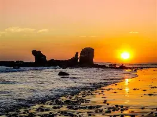

The best beaches

Playa El Zonte
Costa de La Libertad

Playa Las Flores
Oriente del país (cerca de El Cuco)

Playa Mizata
Zona occidental

Playa El Tunco
Departamento de La Libertad

Playa El Sunzal
Junto a El Tunco

Punta Roca
Puerto de La Libertad